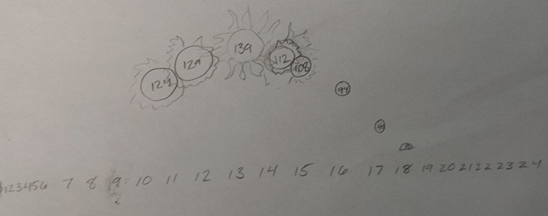
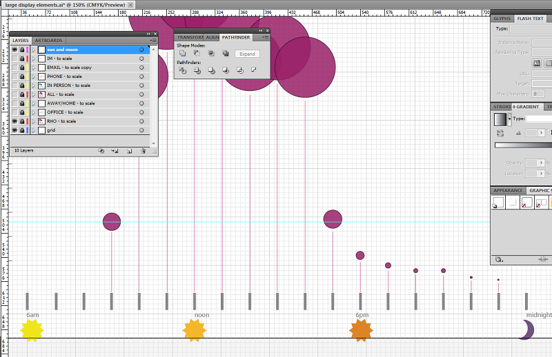
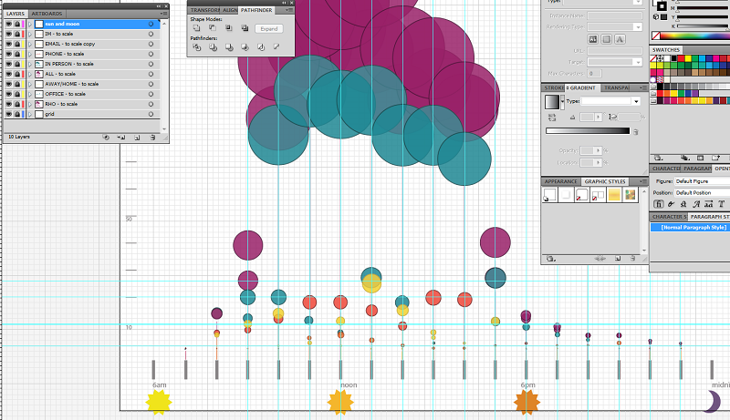

After noticing that the bulk of transactions occurred between 10am and 3pm, I thought I could relate that to an image of the sun rising and setting. Here was an initial sketch:
Then I realized that I wanted to show the number of transactions in scale. This worked well in Adobe Illustrator, where 139 transactions easily became a circle that was 139 pixels wide — and could be easily resized in a vector program. Here is a test from the "all transaction" data:
Because I had to record 16 hours of data, I used transparent color so that overlapping edges could be identified. I saw that the smallest of the data points might become problematic because they were so hard to see. I tried another version where I used a different scale and color for the smallest transactions:
This made the smaller images easier to see, but also seemed confusing, and it still wouldn't work on a screen from a distance. I also abandoned the idea of using a sun image for the number of transactions; that was starting to seem like "chart junk," as Tufte would put it. I thought instead I could use it in a legend somewhere:
I then decided that using a series of small multiples would make for a better display on a larger device and also reinforce the idea that the late morning / early afternoon hours were the most trafficked. I added all of the different data points (by format and location) to the same Illustrator file and applied transparencies so that edges could be identified where data points overlapped. 
I didn't like how much horizontal space each chart was taking up. I wanted to use the idea of a clock face, but couldn't figure out how to deal with the overlapping data: there would be several hours where both a.m. and p.m. data existed. I left that for a while and then realized I could use two separate "rings" around the clock and use two different colors to differentiate between morning and evening. The final image I came up with uses the following ideas from Tufte: